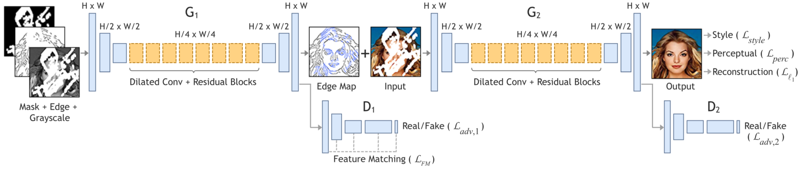
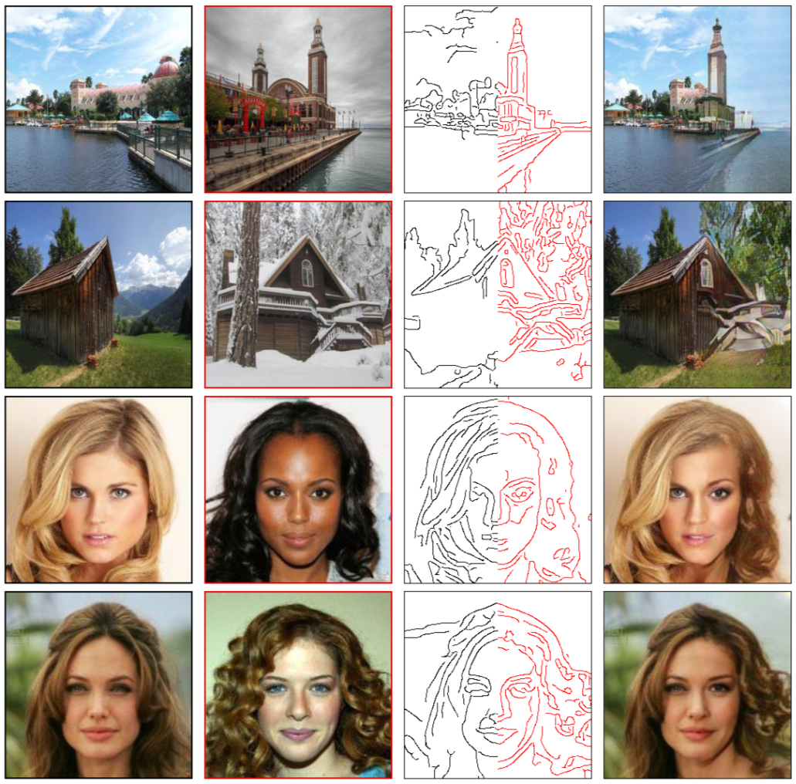
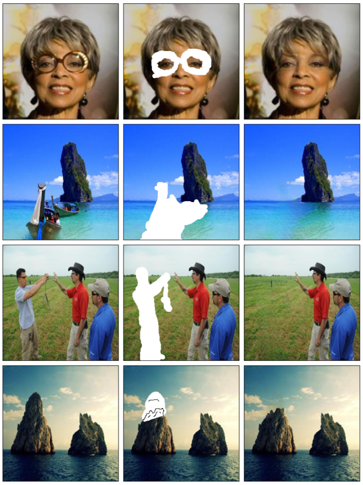

University of Ontario Institute of Technology 2000 Simcoe St. N., Oshawa ON L1G 0C5
Abstract
We propose a two-stage model that separates the inpainting problem
into structure prediction and image completion. Similar to sketch art,
our model first predicts the image structure of the missing region in
the form of edge maps. Predicted edge maps are passed to the second
stage to guide the inpainting process. We evaluate our model end- to-end
over publicly available datasets CelebA, CelebHQ, Places2, and Paris
StreetView on images up to a resolution of 512 x 512. We demonstrate
that this approach outper- forms current state-of-the-art techniques
quantitatively and qualitatively.

Proposed Generative Adversarial Network for structure guided image
completion using edge maps. Incomplete grayscale image and edge map, and
mask are the inputs of G1 to predict the full edge map. Predicted edge
map and incomplete color image are passed to G2 to perform the
inpainting task.
Some results
The proposed network is able to use color and edge information from
different sources to create unique images.

Edge-map (3rd column) generated using the left-half of (1st column)
(shown in black) and right-half of (2nd column) (shown in red). Input is
(1st column) with the right-half removed, producing the output (last
column).
The proposed method can also be used for photo editing as seen
below.

Examples of object removal and image editing us- ing our EdgeConnect
model. (Left) Original image. (Cen- ter) Unwanted object removed with
optional edge informa- tion to guide inpainting. (Right) Generated
image.
{kind=link}
{kind=link}
{kind=link}